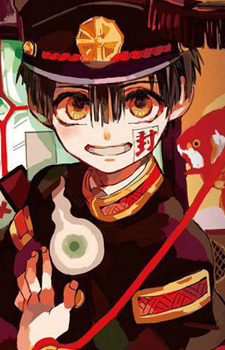

Penempatan Gambar pada CSS

Hanako is a short boy with dark hair and large amber eyes. He wears an ancient black gakuran and has an exorcist's seal on his left cheek. It is also usually seen accompanied by two spirit spheres named Haku-Joudai.